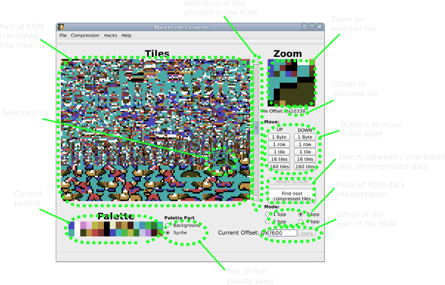
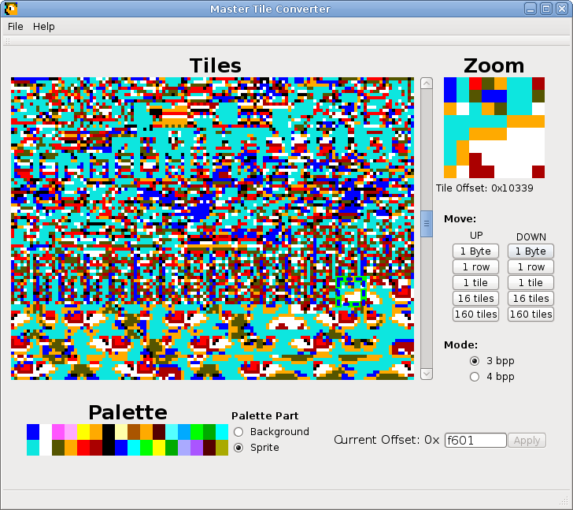
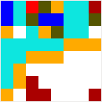
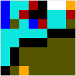
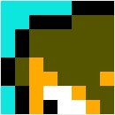
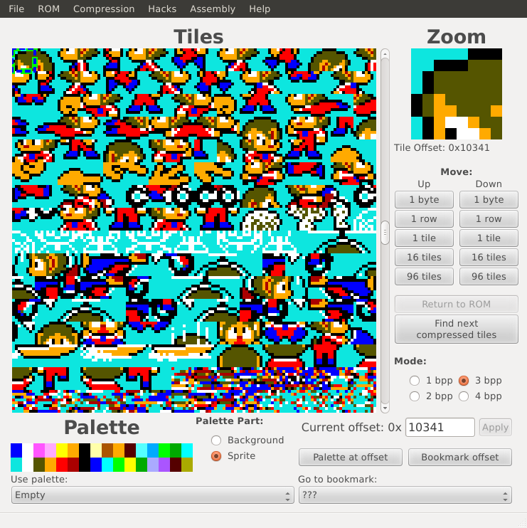
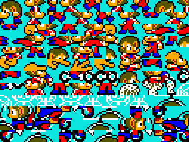
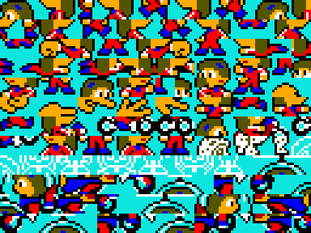
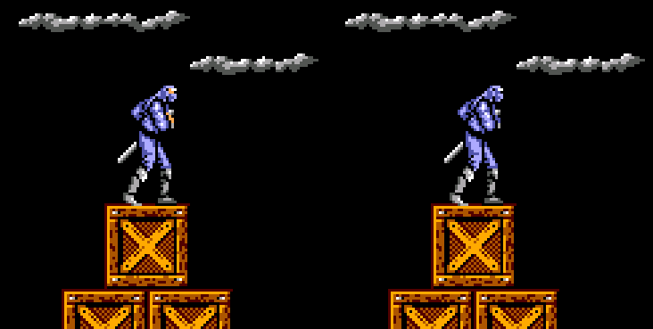

Welcome to Master Tile Converter!
Master Tile Converter (MTC) can export and import several tiles formats in Sega Master System (SMS) roms. It uses a portable Qt interface.
Features:
Contact:
Executable version 0.9 for Windows: http://jmimu.free.fr/mastertileconverter/downloads/mastertileconverter_win_v07.zip
Development version sources (using git): https://github.com/jmimu/Master-Tile-Converter
How to compile: install QtCreator (Qt 4), open mastertileconverter.pro, and compile!

When your palette is correct and you find something similar to what you are looking for:

In the screenshot above, the colors are not what one might expect. It is due to an incorrect byte alignment. Since (2, 3 or 4) bytes represent 8 pixels, you have to begin at the right byte to have something correct.

With the UP/Down 1 Byte buttons, find when the colors are correct (there are 2, 3 or 4 possibilities)

Then use the UP/Down 1 Row buttons to get the correct tile at the top of the tile

Finally use the UP/Down 1/16 tiles buttons to get the first tile at the beginning of the displayed part of ROM

You are ready to import/export! You can note the offset for the next time...
When you have your tiles in correct position, you can export an image of them File>Export Picture. You will get a 16, 8 or 4-color BMP file, named after the offset and the number of bits per pixel, to help you remember where and how it has been taken from the ROM.

You can modify the picture in a graphic editor that respects indexed images palettes. It is the case of "GIMP" but not "kolourpaint", as an example.
It is very important to keep the part of the picture that are not intelligible unchanged. This data is not graphics, it may represent the music or the program and you don't want to modify it randomly...

This picture will be the record of your work. You will be able to use it to quickly re-patch the rom.
You can import the modified picture in the rom if it is correctly aligned. The simplest way for it is to input the offset. Use File>Export Picture.
Master Tile Converter can also uncompress tiles from ROM if the compression is "Phantasy Star" RLE (see SMS Power). Thanks to Maxim for his searching and sharing information! See TileDecoder.
To find compressed data, just go to the begining of the rom (offset 0), and click on Find next compressed tiles. It can take some time. You can get "false positive" (tiles having no sens). In this case just click again on Find next compressed tiles.
When you find correct tiles, you can export it using File>Export Picture. You will get a 16-color BMP file, named after the offse, the number of bits per pixel, the number of decompressed tiles, and the maximum size of the compressed data.
You can modify the picture in a graphic editor that respects indexed images palettes. It is the case of "GIMP" but not "kolourpaint", as an example.
You then have to compressed the modified picture, using Compression>Compress Picture. You will be asked how many tiles have to be compressed (since the picture is 8 tiles-wide). Check picture name to be sure how many tiles to compress. Then you will have a message saying the size of the compressed data. Check that it is less than the maximum allowed (written on the picture name). It may work with a little more, but anything can happen (other pictures changed, game bug...). The compressed data is written in the file "compr_tmp.dat" in Master Tile Converter folder.
Use File>Import compressed data to import this "compr_tmp.dat" file into the rom at the current address.
It you have to make several modifications in a rom, you can make a hack file to regroup them.
This has to be a text file containing several entries like this:
;only for emulators
17EDE:00 00 00 *unactivate boot
You can apply this file with Hacks>Apply Hack File. The "confirm" version will ask you to confirm every modification, the "fast" version will apply all the modifications.
You can also use Master Tile Converter to modify a palette in the rom.
When importing a palette, Master Tile Converter will tell you the most likely places where the palette may be recorded in the ROM if not compressed, with a indicator on how many colors are correct.
You can then try to change one byte in the rom corresponding to the color you want to change, and record this as a hack file.

To have Cyber Shinobi's Joe fully covered by his cloths, the hack will be: "725E:25 *blue skin for joe". In order to avoid defaults on foes face, you may have to add: "7264:25 *blue skin for foes". Now they are all blue, but it's ok, they are just robots!
After applying the hack file you created you can save the modified rom with ROM>Save ROM.
You can also export your modifications as an IPS patch to share it with others using the ROM>Create IPS patch command.
You can find examples of modifications for Alex Kidd in Miracle World in the ex directory.
This program is free software: you can redistribute it and/or modify it under the terms of the GNU General Public License as published by the Free Software Foundation, either version 3 of the License, or (at your option) any later version.
See readme file for more information.
SMS power website: http://www.smspower.org
Meka emulator: http://www.smspower.org/meka
Maxim's page: http://www.smspower.org/maxim